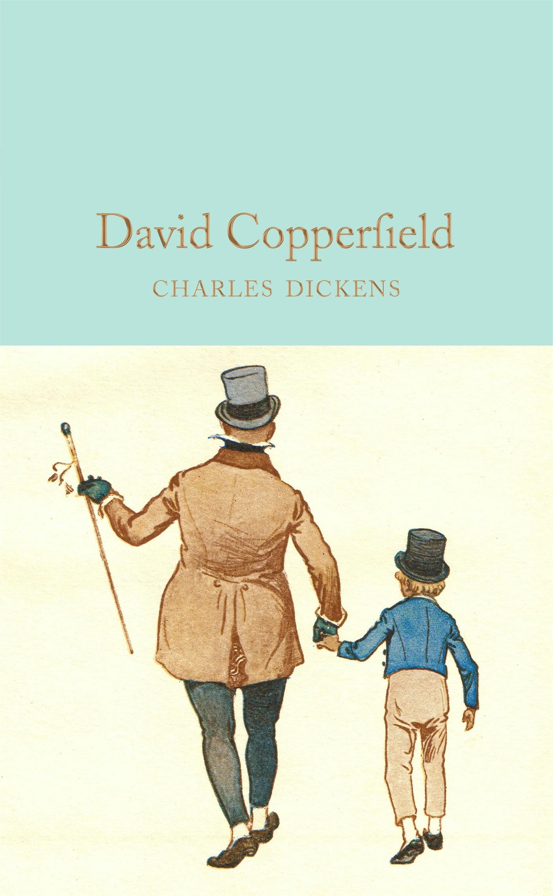
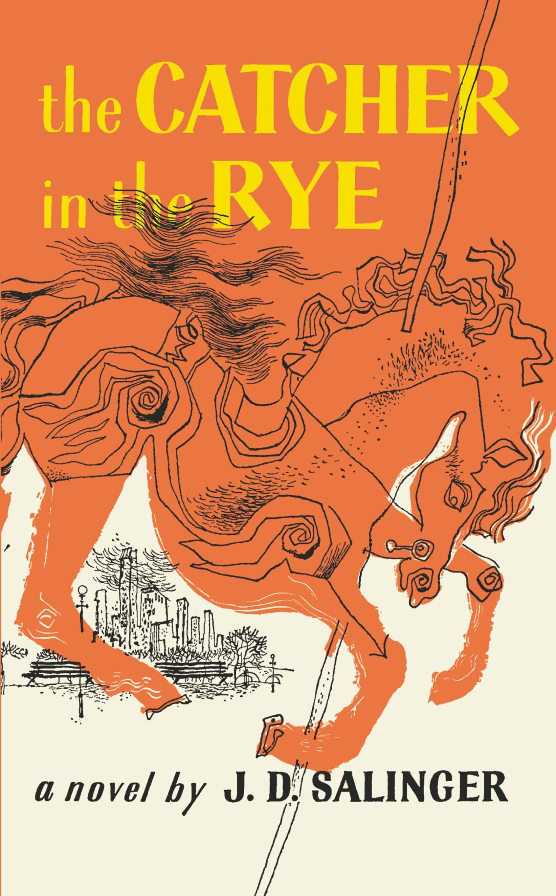
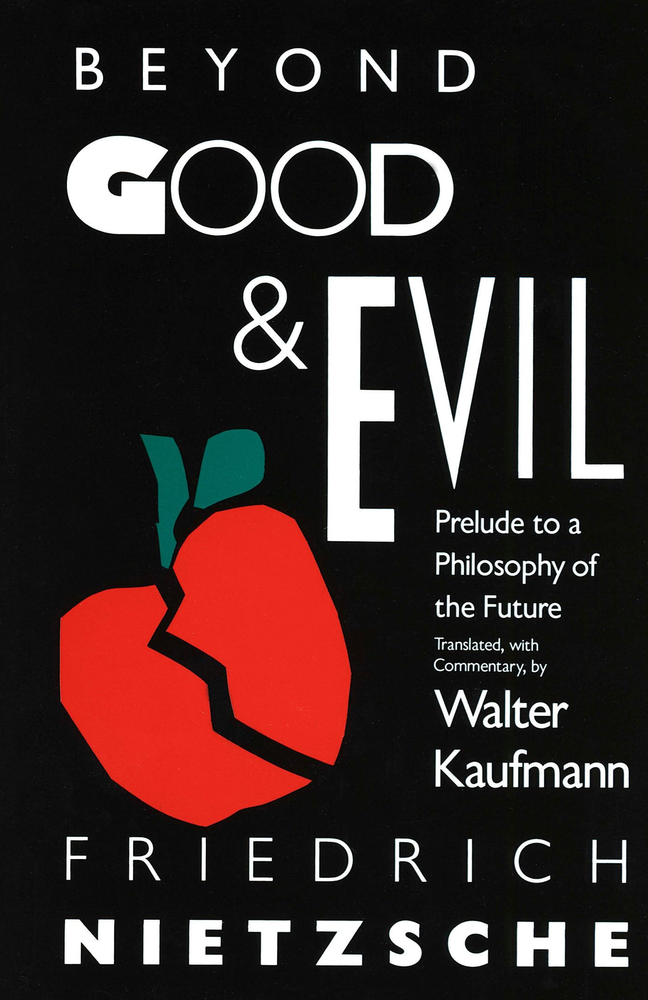
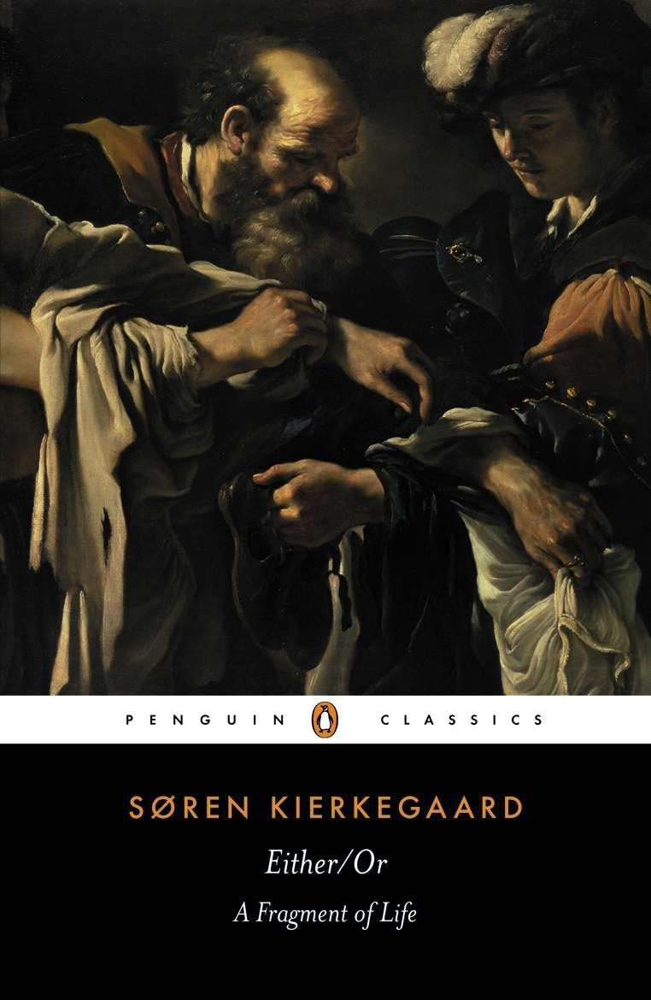

“I cannot remember the books I've read any more than the meals I have eaten; even so, they have made me.” ― Ralph Waldo Emerson
Some of my favorite books:

David Copperfield
Author: Charles Dickens
Published: 1850
I was initially intimidated by this book because it is 765 pages (as a rule, I tend to doubt if I will finish a book if it is over 400 pages). However, I was instantly swept away by writing style of Charles Dickens. The time period of this novel, the language he uses, and his humorous style really got to me. This book has some of the most memorable characters I have ever encountered. :] I consider this my favorite novel of all time--absolute classic.

The Catcher in the Rye
Author: J.D. Salinger
Published: 1951
This book is fairly short, only coming in ~236 pages. This was the first work from J.D. Salinger that I had read, and I immediately fell in love. I read this before David Copperfield, and I considered this as my favorite novel for the longest time. This is good gateway to Salinger, and it led me to read all of his works (though it should be noted that he only has four works, and they are all pretty short).
Crime and Punishment
Author: Fyodor Dostoevsky
Published: 1866
I actually tried to read this book twice. The first time, I made it about halfway through (fun fact: this book is 671 pages long, so you can see that I initially lost the 400+ page battle with this one). I picked the book back up again some time later and had no problems finishing it. It's a beautiful story (in a twisted way) and exemplifies all of the not-so-savory things we try to conceal about our human nature. Really beautiful book in this regard, and it was a fine introduction to Dostoevsky.

Beyond Good & Evil
Author: Friedrich Nieztsche
Published: 1886
This was my first proper philosophical text. I don't really know what to say other than this book changed my life. I really don't know what to say other than that. It made me really love and appreciate life.

Either/Or
Author: Søren Kierkegaard
Published: 1843
Also a life-changing book. It's a bit of long one. :]